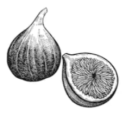

| Astronomical object | R (km) | mass (kg) |
|---|---|---|
| Sun | 696,000 | 1.989e+30 |
| Earth | 6,371 | 5.972e+24 |
| Moon | 1,737 | 7.34e+22 |
| Mars | 3,390 | 6.39e+23 |
First Author and
and
and
Abstract:
Population aging is increasing demand for digital systems that support older adults’ wellbeing. Most existing systems emphasize safety, monitoring, and service coordination, but underrepresent identity, meaning, contribution, and relationship quality. This paper proposes GRACE (Growing, Resourceful, Active, and Enriched Life), a narrative-centered socio-technical ecosystem for elder wellbeing. GRACE is designed as an intelligent multiagent community computing framework that supports older adults in maintaining relationships with the spiritual self, family and friends, working colleagues, communities, and the wider world, including markets and public services. The paper makes four contributions. First, it introduces a narrative-centered theory of elder wellbeing grounded in relationship quality and contribution exchange. Second, it proposes the GRACE Index, a daily measure of whether a person remains in the zone of narrative selfhood during ordinary and difficult periods. Third, it extends the framework with three innovations: daily hero’s-journey story creation, an AI-based fast state predictor, and a smart stimulus agent for anticipatory support. Fourth, it presents an agent-based simulation design to evaluate these innovations. We argue that elder-oriented AI should move beyond deficit-oriented monitoring toward socio-technical ecosystems that preserve dignity, agency, reciprocity, and life authorship.
1 Introduction
Population aging is reshaping healthcare, labor, family structures, and public services. In response, digital systems for older adults have grown rapidly, especially in telehealth, remote monitoring, medication support, and care coordination. These systems are valuable, but many are built around narrow assumptions: that old age is primarily a condition of decline, risk, and dependency.
That assumption is socially and technically limiting. Older adults are not only patients or service users. They are also storytellers, mentors, workers, caregivers, citizens, spiritual beings, and bearers of memory and legacy. Their wellbeing depends not only on safety and functional support, but also on continuity of identity, meaningful relationships, opportunities to contribute, and the capacity to interpret life events within a coherent story.
This paper proposes GRACE—Growing, Resourceful, Active, and Enriched Life—as a socio-technical ecosystem for elder wellbeing. GRACE is an intelligent community computing framework organized around five relational domains: 1) spiritual self, 2) family and friends, 3) working colleagues, 4) communities, and 5) the wider world, including markets and public services. GRACE is grounded in the premise that elder wellbeing is relational and that the quality of relationships shapes the exchange of care, recognition, participation, and contribution.
The central design claim of GRACE is that narrative identity should be treated as a core systems concept. Older adults should not be modeled merely through static profiles, health states, or risk scores. They should be understood as persons living through unfolding stories. GRACE therefore acts as a live autobiographical ecosystem, helping elders remain connected to selfhood across daily life, transitions, and adversity. A high-level overview is shown in Fig. 1, with the multiagent architecture shown in Fig. 2 and the dynamic closed-loop logic in Fig. 3.
To operationalize this vision, the paper introduces the GRACE Index, a daily measure of whether a person remains “in the zone” of narrative selfhood. The paper further adds three innovations: 1) a Daily Story Creation Engine that frames lived experience through the hero’s journey, 2) an AI-based Fast State Predictor that forecasts near-future wellbeing state, and 3) a Smart Stimulus Agent that initiates timely, personalized prompts to preserve wellbeing and authorship. Finally, the paper proposes an agent-based simulation design to demonstrate these innovations.
1.1 Contributions
- A socio-technical framework for elder wellbeing centered on narrative identity, relationship quality, and contribution exchange.
- The GRACE Index, a daily metric of narrative selfhood and adaptive continuity.
- Three AI-enabled innovations—daily story creation, fast state prediction, and smart stimuli—for anticipatory wellbeing support.
- An agent-based simulation design for evaluating these mechanisms before real-world deployment.
3 III. GRACE as a Socio-Technical Ecosystem
The overall socio-technical structure of GRACE is illustrated in Fig. 1. The five relational domains, their functions, and example system supports are summarized in Table I.
3.1 A. Core Premise
GRACE is based on a simple claim: elder wellbeing emerges from the interaction of identity, relationships, contribution, and access. A person flourishes when they remain connected to who they are, to people who matter, to ways of contributing, and to the broader systems that structure everyday life.
3.2 B. Five Relational Domains
GRACE supports the elder’s relationship with: 1. Spiritual self 2. Family and friends 3. Working colleagues 4. Communities 5. Wider world, including markets and public services.
| Domain | Description | Functions | Examples |
|---|---|---|---|
| Spiritual Self | Inner life, values, faith, reflection, existential orientation | D | G |
| Family and Friends | Intimate and enduring personal relationships | E | H |
| Working Colleagues | Ongoing or legacy vocational and professional ties | F | I |
| Communities | Local groups, associations, faith communities, neighborhoods, civic groups | 4 | 4 |
| Wider World | Markets, institutions, services, transport, civic systems, public services | 5 | 5 |
4 SaMples
file is intended to serve as a “sample article file” for IEEE journal papers produced with (Pandoc/Quarto)-Markdown using IEEEtran.cls version 1.8b and later for the PDF output. It is based on bare_jrnl_new_sample4.tex provided by IEEE Publication Technology, Staff and available from https://template-selector.ieee.org/. The most common elements are covered in the simplified and updated instructions in New_IEEEtran_how-to.pdf. For less common elements you can refer back to the original IEEEtran_HOWTO.pdf. It is assumed that the reader has a basic working knowledge of \(\LaTeX\) [1] and of (Pandoc/Quarto)-Markdown [2], [3] markup.
4.0.1 Figures
An image with nonempty alt text will be rendered as a figure with a caption with Pandoc and Quarto. Quarto includes a different features to simplify the use of figures and subfigures. Here, it is recommended to use div block with #fig- label to embed your Figures.

The figures is cross-referenced as Fig. 2 and even the sub-figures as Fig. 2 (b).
4.0.2 Tables
Similarly, many kind of tables may be used with Pandoc and Quarto. The latter also includes different features to simplify the table output. To make tables cross-referenceable use a label with a #tbl- prefix.
However, it is recommended to avoid using the commonly used single Markdown table known as a ‘pipe table’. In fact, Pandoc Markdown uses the \(\LaTeX\) longtable package, which does not support the two-column mode, which is required for most IEEEtran journals. quarto-ieee uses a hack to temporarily switch to one-column mode. However, this hack may break the page layout. To overcome this issue, a basic way is to use code cells (as for Table 4). Quarto is a multi-language and it uses Knitr to execute R code and can execute Python code blocks within Markdown.
| Col1 | Col2 | Col3 |
|---|---|---|
| A | B | C |
| E | F | G |
| A | G | G |
| Col1 | Col2 | Col3 |
|---|---|---|
| A | B | C |
| E | F | G |
| A | G | G |
The Tables are cross-referenced as Table 3 for details, especially Table 3 (b). There is also Table 4.
| Col1 | Col2 | Col3 |
|---|---|---|
| A | D | G |
| B | E | H |
| C | F | I |
4.1 Bibliography
IEEE journal should normally use IEEEtran1 BibTEX style. Nevertheless, Pandoc and Quarto do support BibTEX with natbib or biblatex. However, neither is officially recommended for normal IEEE use. For this reason, quarto-ieee uses citeproc with the ieee CSL style sheet.
5 Conclusions
The conclusion goes here.
Acknowledgment
This should be a simple paragraph before the References to thank those individuals and institutions who have supported your work on this article.
Use []{.appendix options="An Appendix"} markup if you have a single appendix. IEEEtran state that to do not use \section{} anymore after \appendix.

Departmen, First Institution, City, 18800 Country, Second Institution
Use IEEEbiography with figure as option and the author name as the argument followed by the biography text.
[1]
F. Mittelbach and U. Fischer, The LaTeX companion, 3rd ed. Addison Wesley Professional, 2023.
[2]
J. MacFarlane, A. Krewinkel, and J. Rosenthal, “Pandoc.” [Online]. Available: https://github.com/jgm/pandoc
[3]
J. J. Allaire, C. Teague, C. Scheidegger, Y. Xie, and C. Dervieux, “Quarto.” Jan-2022 [Online]. Available: https://github.com/quarto-dev/quarto-cli
Author Keywords
- aging,
- wellbeing,
- narrative identity,
- multiagent systems,
- human-centered AI,
- socio-technical systems,
- community computing,
- eldercare technology
Footnotes
IEEEtran BibTeX style support page is: http://www.michaelshell.org/tex/ieeetran/bibtex/↩︎
Citation
BibTeX citation:
@software{author2023,
author = {Author, First and Author, Second},
title = {GRACE: {A} {Narrative-Centered} {Socio-Technical} {Ecosystem}
for {Elder} {Wellbeing}},
pages = {1-3},
date = {2023-06-23},
url = {https://github.com/dfolio/quarto-ieee},
langid = {en},
abstract = {Population aging is increasing demand for digital systems
that support older adults’ wellbeing. Most existing systems
emphasize safety, monitoring, and service coordination, but
underrepresent identity, meaning, contribution, and relationship
quality. This paper proposes GRACE (Growing, Resourceful, Active,
and Enriched Life), a narrative-centered socio-technical ecosystem
for elder wellbeing. GRACE is designed as an intelligent multiagent
community computing framework that supports older adults in
maintaining relationships with the spiritual self, family and
friends, working colleagues, communities, and the wider world,
including markets and public services. The paper makes four
contributions. First, it introduces a narrative-centered theory of
elder wellbeing grounded in relationship quality and contribution
exchange. Second, it proposes the GRACE Index, a daily measure of
whether a person remains in the zone of narrative selfhood during
ordinary and difficult periods. Third, it extends the framework with
three innovations: daily hero’s-journey story creation, an AI-based
fast state predictor, and a smart stimulus agent for anticipatory
support. Fourth, it presents an agent-based simulation design to
evaluate these innovations. We argue that elder-oriented AI should
move beyond deficit-oriented monitoring toward socio-technical
ecosystems that preserve dignity, agency, reciprocity, and life
authorship.}
}
For attribution, please cite this work as: